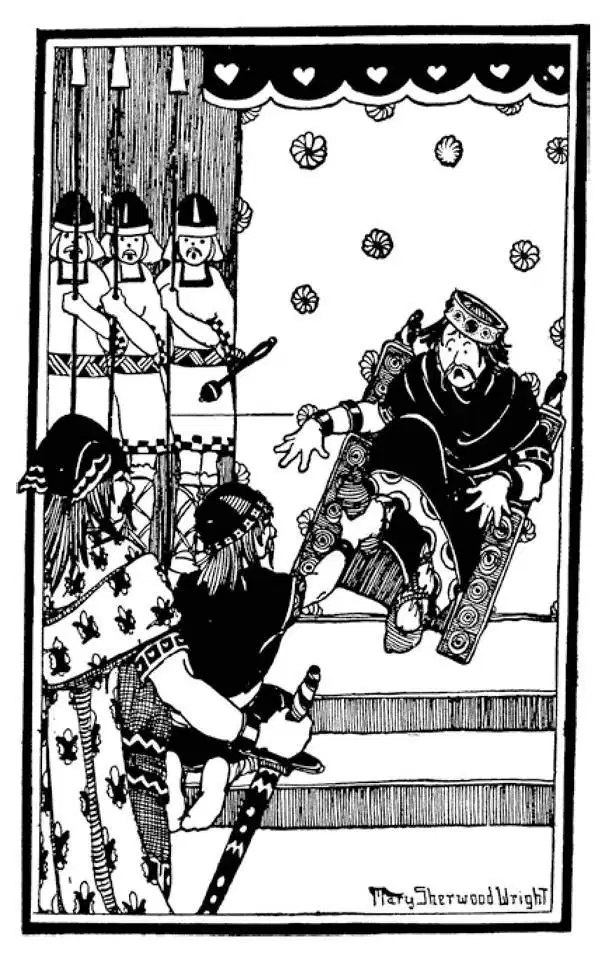
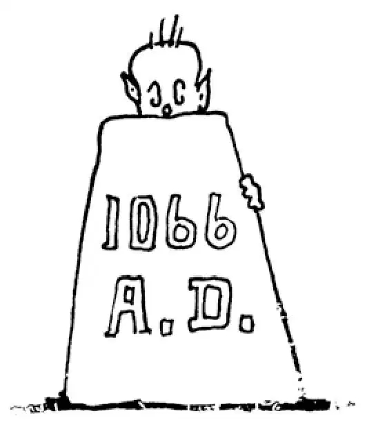

52
A Pirate's Great Grandson
海盗有个了不起的孙子

WHEN Alfred was king, the Danes had raided England.
At the same time their cousins the Norsemen had raided the coast of France.
King Alfred at last had to give the Danes a part of the English coast, and they then settled down and became Christians.
The French king likewise did the same thing. In order to save himself from further raids, he gave the Norsemen a part of the French coast. The Norsemen then, as the Danes had done, settled down and became Christians.

Norman raising king's foot（诺曼人抬起国王的脚）
These Norsemen who raided France were led by a very bold and brave pirate named Rollo. In return for this gift of land Rollo was supposed to do homage by kissing the king's foot. But Rollo thought it beneath him to kneel and kiss the king's foot, so he told one of his men to do it for him. His man did as he was told, but he didn't like to do it, either. As he kissed the king's foot he raised it so high that he tipped his Majesty over backward.
The part of France that was given the Norsemen came to be called Normandy, and it is so called today, and the people were known thereafter as Normans.
In 1066 there was a very powerful duke ruling over Normandy. His name was William, and he was descended from Rollo the pirate. Perhaps your name may be William. If you have any English or French ancestors, you may even be descended from this William.
William was strong in body, strong in will, and strong in rule over his people. He could shoot an arrow farther, straighter, and with more deadly effect than any of his knights. No one else was strong enough even to bend the bow he used.
William and his people had become Christians, but according to their idea, the Christian God was more like their old god, Woden, under a new name. William believed that, “might made right” for he was descended from a pirate, and he still acted like a pirate. Whatever he wanted he went after and took, even though he was supposed to be a Christian.
Now, William was only a duke, not a king, and he wanted to be a king. In fact, he thought he would like to be king of England, which was just across the channel from his own dukedom. Besides, the English king Edward was William's cousin, so he thought that gave him a good claim to the throne.
It so happened that a young English prince named Harold was shipwrecked on the coast of Normandy and was found and brought before William. Now, it seemed likely that some day Harold would be king of England, and William thought this a good chance to get England for himself. Before he would let Harold leave, he made the young man promise that when his turn came to be king, he would give England to William just as if that country were a horse or a suit of armor that could be given away. In order that this promise should be solemnly binding, William made Harold place his hand on the altar and swear, just as people place a hand on the Bible nowadays, when they take an oath. After Harold had sworn on the altar, William had the top lifted and showed Harold that below it were the bones of some of the Christian saints. Swearing on the bones of a saint was the most solemn kind of an oath one could possibly take. It was thought one would not dare to break such an oath for fear of the wrath of God.
Harold then returned to England. But when the time came that he should be king, the people naturally would not let him give England to William. Besides that, Harold said that such an oath, which he had taken against his will, an oath which had been forced on him by a trick, was not binding. So Harold became king.
When William heard that Harold had been made king, he was very angry. He said that he had been cheated and that Harold had broken his oath. At once he got ready an army and sailed over to take the country away from Harold.
As William landed from his boat, he stumbled and fell headlong on the shore. All his soldiers were shocked and greatly worried by this, for they thought it very bad luck—a bad omen, the Greeks would have called it. But William was quick-witted, and as he fell he grabbed up some of the earth in both hands. Then, rising, he made believe he had fallen on purpose and, lifting his hands in the air, exclaimed that he had taken up the ground as a sign that he was going to have all the land of England. This changed the bad omen into good luck.
The battle started, and the English fought furiously to defend themselves against these foreigners who were trying to take their country away from them. Indeed, they had almost won the battle when William gave an order to his men to pretend they were running away.
The English then followed, wildly rejoicing, and running pell-mell after the Normans. Just as soon, however, as the English were scattered and in disorder, William gave another signal, and his men faced about quickly. The English were taken by surprise, and before they could get into fighting order again, they were defeated, and Harold, their king, was shot through the eye and killed. This was the Battle of Hastings, one of the most famous battles in English history.
Harold had put up a brave fight. But luck was against him. Only a few days before this, he had had to fight a battle with his own brother, who in a traitorous way had got together an army against him. We are sorry for Harold, and yet it was probably better for England that things turned out as they did—yet who can tell?
William marched on to London and had himself crowned king on Christmas day, 1066. Ever since then he has been known as William the Conqueror, and the event is called the Norman Conquest. After this England had a new line of kings—a Norman family and a pirate family—to rule over her.
William divided England up among his nobles as if it were a pie, and gave each a share in the feudal way. They had to do homage to him as his vassals and promise to fight for him and to do as he said. Each of William's nobles built a castle on the property he was given. William himself built a castle in London by the Thames River. On the same spot Julius Caesar had built a fort, but it had disappeared; and Alfred the Great had built a castle there, but it, too, had disappeared. But the castle William built is still standing today. It is known as the Tower of London.
William was a splendid boss and very business-like. He set to work and had a list made of all the land in England, a list of all the people and of all the property they had. This record was called the Domesday Book and was something like the census now taken in this country every ten years. This list gave the name of everyone in England and everything each owned, even down to the last cow and pig. If your ancestors were living in England then you can look in the Domesday Book and find their names, how much land they owned, and how many cows and pigs they had.
In order that no mischief might take place at night, William started what was called the curfew . Every evening at a certain hour a bell was rung. Then all lights had to be put out, and everyone had to go indoors—supposedly to bed.
One thing, however, that William did made the English very angry. He was extremely fond of hunting, but there was no good place where he could hunt near London. In order to have a place for hunting, he destroyed a large number of village houses and farms and turned that part of the country into a forest. This was called the New Forest, and though it is now about nine hundred years old it is still called New to this day.
On the whole, William, although descended from a pirate, gave England a good government and made it a safe place to live. Since that time, no foreign country has ever conquered England. So 1066 was almost like the Year 1 for the English.
【中文阅读】
阿尔弗烈德是国王时，丹麦人袭击了英国。
与此同时，丹麦人的亲戚挪威人袭击了法国海岸。
国王阿尔弗烈德最终不得不把英国海岸的一部分给了丹麦人，随后丹麦人在那里定居下来，成了基督徒。
同样地，法国国王做了相同的事情。为了自己不再遭受劫掠，他把法国海岸的一部分给了挪威人。随后挪威人像丹麦人那样在那里定居下来，成了基督徒。
袭击法国的这些挪威人由一个海盗领导，他叫罗洛，非常无畏，非常勇敢。作为得到法国土地这份礼物的回报，罗洛应该亲吻国王的脚来表示敬意，但是罗洛认为向国王下跪、还要亲吻他的脚有失尊严，于是他让一个手下替他去做。他的手下虽然按照他的吩咐做了，但是也很不情愿。所以他亲吻国王脚时，把他的脚抬得过高，害得国王陛下竟向后摔倒。
分给挪威人的那部分法国土地被称为诺曼底，如今还是叫这个名字，从此那里的人就被称为诺曼人。
1066年，一位非常有权力的公爵统治了诺曼底，他名叫威廉，正是海盗罗洛的后裔。也许你也叫威廉。如果你的祖先是英国人或法国人，说不定你就是这位威廉的后裔呢。
威廉身体强壮，意志坚强，统治人民手段强硬。他射出的箭比他手下的任何一位骑士都射得更远、更直、更具杀伤力。就连他的弓也没人有力气拉得开。
威廉和他的人民已是基督徒了，但是按他们的想法，基督教上帝更像他们以前的神沃登，只不过换了个新名字。威廉相信“强权即是公理”，因为他是海盗的后裔，还依然像个海盗一样行事。即使他被公认为是基督徒，凡是他想要的，他一定想法去弄到手。
当时，威廉只是公爵，不是国王，但是他想当国王。事实上，他愿意当英国国王，毕竟英国与他的公爵领地只隔着一条海峡。另外，英国国王爱德华是威廉的亲戚，所以他认为有这层关系他可以理所当然对王位提出要求。
碰巧，年轻的英国王子哈罗德在诺曼底海岸遭遇海难，被人发现，带到威廉面前。当时，哈罗德似乎很可能成为未来的英国国王，威廉认为这可是夺取英国的大好机会。在放哈罗德离开之前，他让这个年轻人发誓：一旦轮到他当国王，就把英国让给威廉，这个国家就像是匹马或一副盔甲一样可以被赠送出去。为了让这个誓言显得隆重，威廉让哈罗德把手放在祭坛上发誓，就像如今人们宣誓时手按圣经一样。哈罗德在祭坛上发誓完毕，威廉让人掀起祭坛的盖子，哈罗德看到下面是一些基督教圣徒的遗骨。面对圣徒的遗骨起誓，是一个人能许下的最郑重的誓言。人们认为因为害怕上帝发怒，什么人都不敢违背这样的誓言。
然后，哈罗德回到了英国。但是正当他就要成为国王的时候，人民当然不会同意他把英国送给威廉。除此之外，哈罗德说他发这样的誓言是违背自己的意愿的，是中了诡计被迫立下的，所以不具约束力。这样，哈罗德就当上了国王。
威廉听说哈罗德当上了国王，怒不可遏。他声称自己被欺骗了，指责哈罗德违背了誓言。他立刻准备好一支军队，渡过海峡，要从哈罗德手里把这个国家夺回来。
威廉离船登陆时，失足摔倒，一头栽向海岸。所有的士兵都惊呆了，非常担心，认为这很晦气——用希腊人的话说，是一个凶兆。但是威廉十分机敏，趁摔倒那一刻，他伸手抓起一把泥。然后，他站起来，假装自己是有意摔倒的。他向空中举起双手，大声说他抓起泥土预示着他将拥有所有英国的土地。就这样，凶兆变成了吉兆。
战斗开始了，英国人为了不让这些外国人夺走自己的国家与敌人展开了激烈的搏斗。确实，英国人差不多就要赢得这场战斗了，就在此时，威廉下令让自己军队假装逃跑。
英国人紧追不舍，同时狂欢不已，队伍散乱匆匆忙忙地追赶着诺曼人。可是，一旦英国人四散开来，杂乱无章，威廉又发出了一个信号，他的士兵们调转头来。英国人大吃一惊，还没来得及重新调整战斗队形，就被击败了。哈罗德，他们的国王，被射穿了眼睛而死。这就是黑斯廷斯战役，英国历史上最著名的战役之一。
哈罗德进行了一场英勇的作战。可是他运气不好。就在这场战役几天前，他被迫和自己的兄弟打了一仗，原来这位兄弟竟然背叛了他，集结了一支军队反对他。我们为哈罗德惋惜，但是像这样的结局可能对英国反而更有利——不过谁知道呢？
威廉向伦敦进发，于1066年圣诞节那天自己加冕为国王。从那时起，他就被称为“征服者威廉”，这一事件被称为“诺曼征服”。从此以后一支新的国王家系——诺曼底家族和海盗家族——统治着英国。
威廉将英国分成若干份给他手下的贵族们，似乎英国是块馅饼，按照封建制度的方式每个贵族分到一份。作为他的封臣，贵族们必须对他宣誓效忠，许诺为他而战，按他的吩咐行事。威廉的每个贵族都在自己分得的封地上修建城堡。威廉自己在伦敦泰晤士河边建了一座城堡。就在同一地点，以前恺撒大帝建了一座堡垒，不过早已不复存在了；后来阿尔弗烈德大帝也在那里建了一座城堡，不过也已不复存在了。可是威廉建的城堡至今还屹立在那里。就是现在闻名于世的伦敦塔。
威廉是一个出色的老板，讲究实效。他大张旗鼓干起来，制定了一份清册，记录了英国所有的土地，还记录了所有的人口和他们所有的财产。这份记录被称为《末日审判书》，有点像如今这个国家每隔十年就开展一次的“人口普查”。这份清册记载了英国所有人的姓名和他们拥有的全部财产，甚至具体到一条牛和一头猪，都不遗漏。如果你的祖先那时生活在英国，你可以在《末日审判书》里查找到他们的姓名，知道他们拥有多少土地，有多少牛和猪。
为了防止有人在夜里作乱，威廉创设了所谓的“宵禁令”。每晚在某个特定时间，钟声响起。然后所有的灯必须全部熄灭，每一个人必须到屋里——大概就上床睡觉吧。
不过威廉做了一件让英国人非常愤怒的事。他酷爱打猎，可是伦敦附近没有合适的打猎的地方。为了有个地方打猎，他毁掉了大量村舍和农田，把那块地变成了一片森林。这块地方被称为“新林”，尽管到现在它已约有九百年的历史，很古老了，但人们还叫它新林。
总之，虽然威廉是海盗的后裔，但是他为英国建立了一个强大的政府，让生活在这里的人安枕无忧。从那时起，没有一个异国征服过英国。因此，1066年对英国人而言几乎是建国元年。
